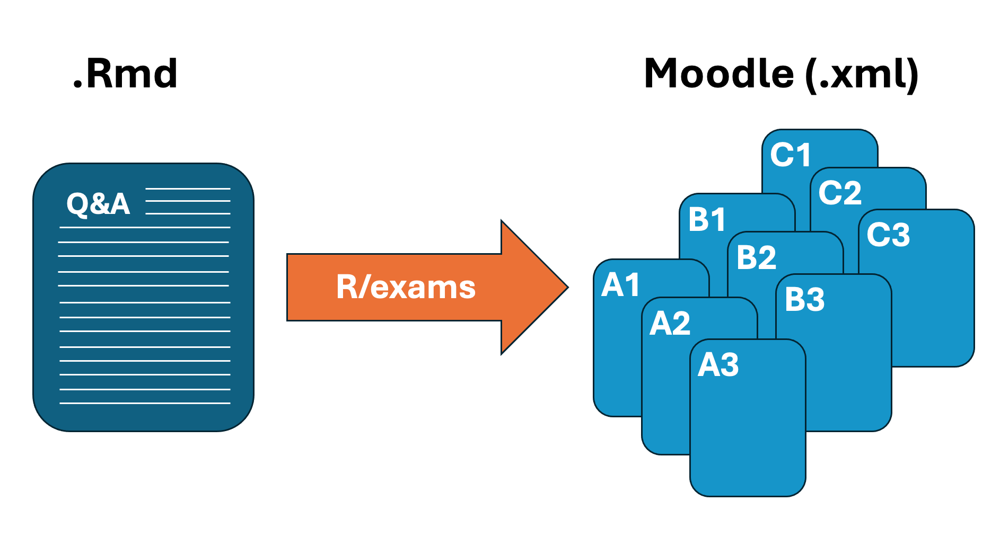
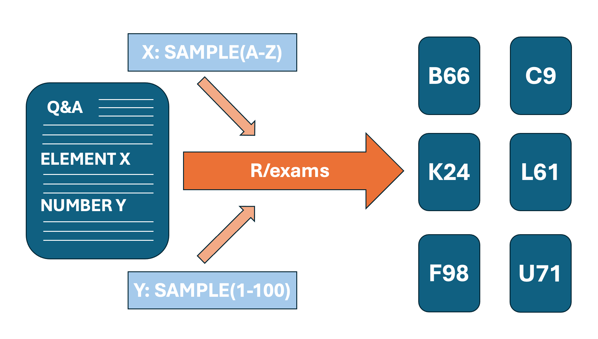
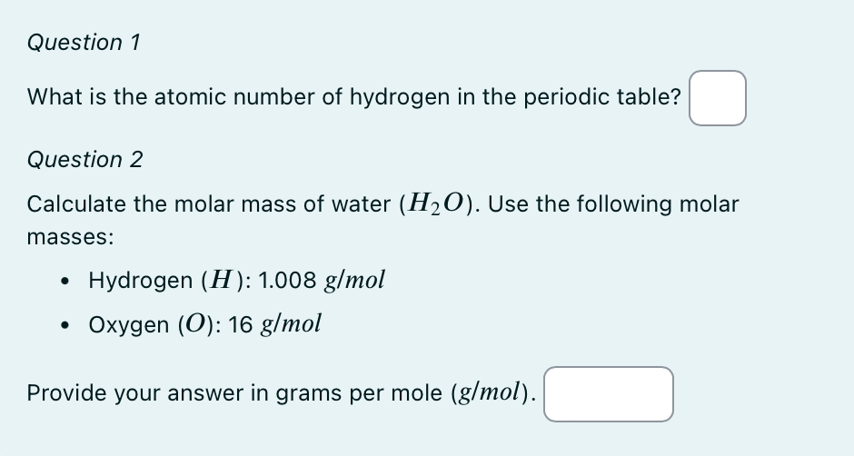

README
This website aims to give an overview of how to use R/exams for the creation of exercises.
Disclaimer: Internal cross-references, marked by ???? are not fully implemented yet.
What is R/exams?
R/exams is a freely available package for the software R.
What is it used for?
It can be used to automatically create several different types of exercises, with a large number of possibilites for customization to various output types.

How does it work?
For each exercise/exam, there is one .Rmd-file which contains all the questions and their solutions. This file is then converted to the desired output type through a script written in an .R-file.
It is also possible to includes certain elements, which are sampled randomly for each copy of the exercise so they all slightly differ (in order to prevent cheating for example).

Short Example
Complete code of a basic numeric example, see here for the downloadable file and a detailed explanation of the code.
```{r data generation, echo = FALSE, results = "hide"}
library(exams)
#atomic number of H
n_H <- 1
# Define the molar masses of hydrogen (H) and oxygen (O)
m_h <- 1.008 # molar mass of hydrogen in g/mol
m_o <- 16.00 # molar mass of oxygen in g/mol
# Calculate the molar mass of the water molecule (H2O)
m_h2o <- 2 * m_h + m_o
```
```{r answers/solutions, echo = FALSE, results = "hide"}
# Create lists for necessary information
answers <- list()
solutions <- list()
types <- list()
explanations <- list()
tolerances <- list()
# Define Question 1: atomic number of hydrogen
answers[[1]] <- "" # No predefined answer for numeric
solutions[[1]] <- n_H
types[[1]] <- "num" #numeric
explanations[[1]] <- "The atomic number of hydrogen is $1$ because it has one proton in its nucleus."
tolerances[[1]] <- 0 # No tolerance
# Define Question 2: molar mass of water
answers[[2]] <- "" # no predefined answer for numeric
solutions[[2]] <- m_h2o
types[[2]] <- "num"
explanations[[2]] <- "The molar mass of H2O is calculated by adding the molar masses of two hydrogen atoms and one oxygen atom."
tolerances[[2]] <- 0.5 # Allow for small rounding errors
```
Question
========
*Question 1*
What is the atomic number of hydrogen in the periodic table? ##ANSWER1##
*Question 2*
Calculate the molar mass of water ($H_2O$). Use the following molar masses:
- Hydrogen ($H$): `r m_h` $g/mol$
- Oxygen ($O$): `r m_o` $g/mol$
Provide your answer in grams per mole ($g/mol$). ##ANSWER2##
```{r questionlist, echo = FALSE, results = "asis"}
answerlist(unlist(answers), markup = "markdown")
```
Solution
========
```{r solutionlist, echo = FALSE, results = "asis"}
answerlist(unlist(explanations), markup = "markdown")
```
$M_{H_{2}O} = 2 \cdot M_H + M_O = 2 \cdot `r m_h` + `r m_o` = `r m_h2o`$ (g/mol)
Meta-information
================
exname: example_num
extitle: molmass of water
extype: cloze
exsolution: `r paste(solutions, collapse = "|")`
exclozetype: `r paste(types, collapse = "|")`
extol: `r paste(tolerances, collapse = "|")`
exshuffle: TRUE
exversion: v1
Quick Guide (Basic Workflow)
Create a new R project (optional but advisable)
Create an .Rmd file or download a (custom) template here.
Write the questions/solutions into the .Rmd-file in the necessary format (see more on the structure and format).
Create an .R file and write the script for conversion or download the template here.
Convert the .Rmd to the desired output.
For Moodle: upload the output file and import the questions into Moodle.
Table of contents
| Page | Content |
|---|---|
| First Steps | How to get started. |
R and R/exams info |
Links to software and installation. |
| R Project Setup | How to set up an R Project and create .Rmd and .R files |
| .Rmd-file: Structure | Gives the structure and “skeleton” for the main .Rmd-file |
| .Rmd-file: Creation | How to utilize the basic strucutre and incorporate the desired content |
| .Rmd-file: Conversion | Process of conversion |
| Add-ons | Brief how-to for including pictures, links, etc. in .Rmd-files |
| Moodle Upload | Guide on import of exercises into Moodle |
| Basic Examples | Short examples to illustrate simple use cases |
| Advanced Examples | More complex Examples |
| Further References | Links to existing documentation, examples, etc. |
| FAQ | Frequently Asked Questions and their answers |
| Downloads and Custom Templates | Templates of different files available for download and creation of a custom template |
How to give feedback or ask questions?
This project is ongoing and we would be happy to receive feedback. Click here and simply write a post to our discussion forum on github.
If you have questions, do not hesitate to ask, simply leave a comment on the Github discussion forum.